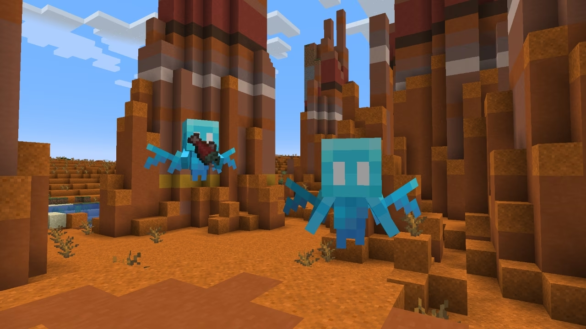
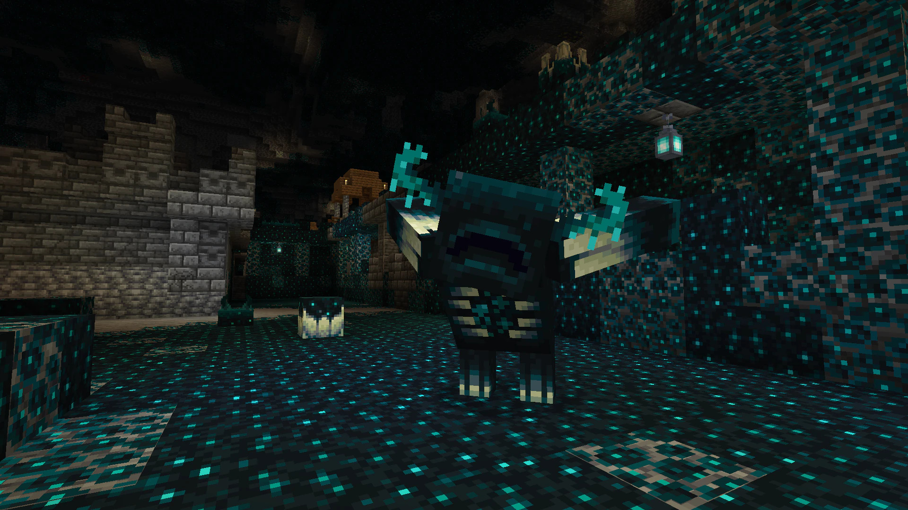
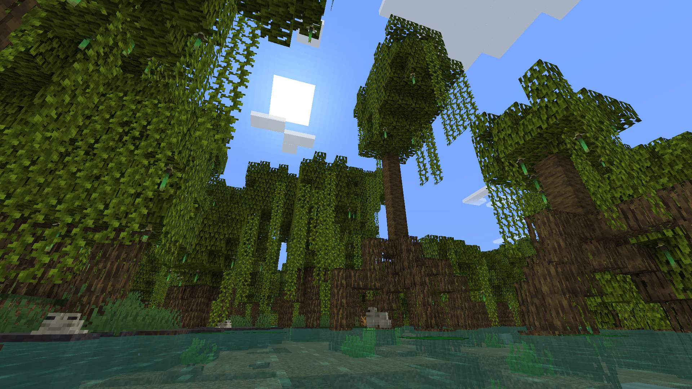
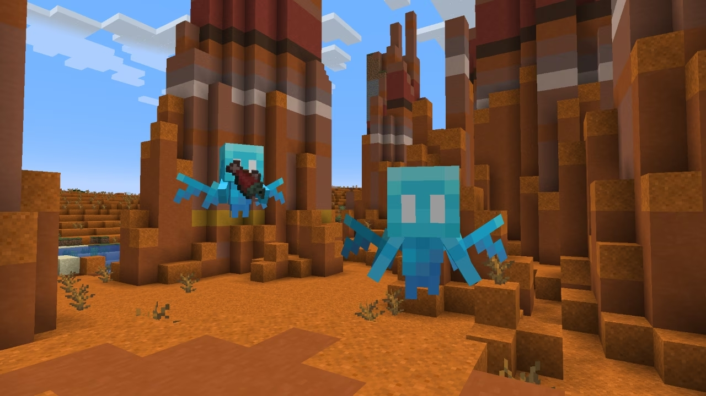
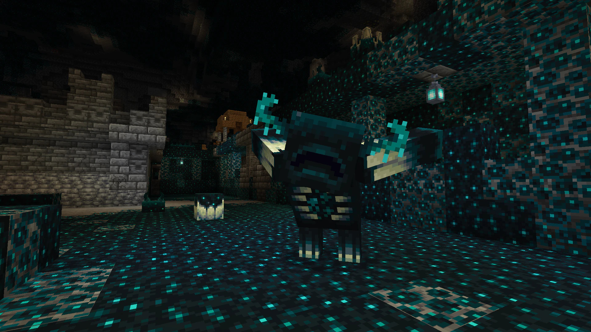
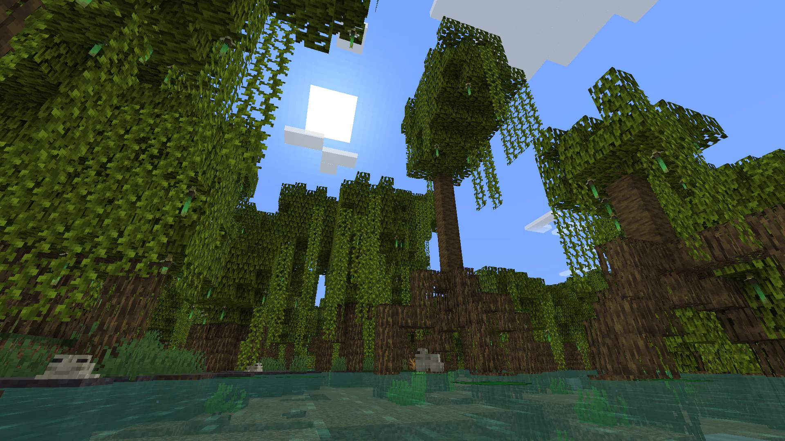

Minecraft
Minecraft is een sandbox-game waarin creativiteit centraal staat. Bouw indrukwekkende structuren, verken eindeloze werelden en ga op avontuur! Met Minecraft is alles mogelijk.
Sandbox
Survival
Open-world
Adventure
Rating: *****
Singleplayer/Multiplayer
Genre: Sandbox, Survival
Ontwikkelaar: Mojang Studios
Uitgavedatum: 18 november 2011
Afbeelding(en)
 





Systeemeisen
- Besturingssysteem: Windows 10
- Processor: Intel Core i3-3210 3.2 GHz / AMD A8-7600 APU 3.1 GHz or equivalent
- Geheugen: 4 GB RAM
- Grafische kaart: Intel HD Graphics 4000 (Ivy Bridge) or AMD Radeon R5 series with OpenGL 4.4*
- Opslagruimte: 4 GB
Recensies
"Minecraft is een meesterwerk in creativiteit en fantasie." - IGN
"Een onmisbaar spel voor alle leeftijden." - Gamespot
"Minecraft is meer dan een spel, het is een fenomeen." - Destructoid